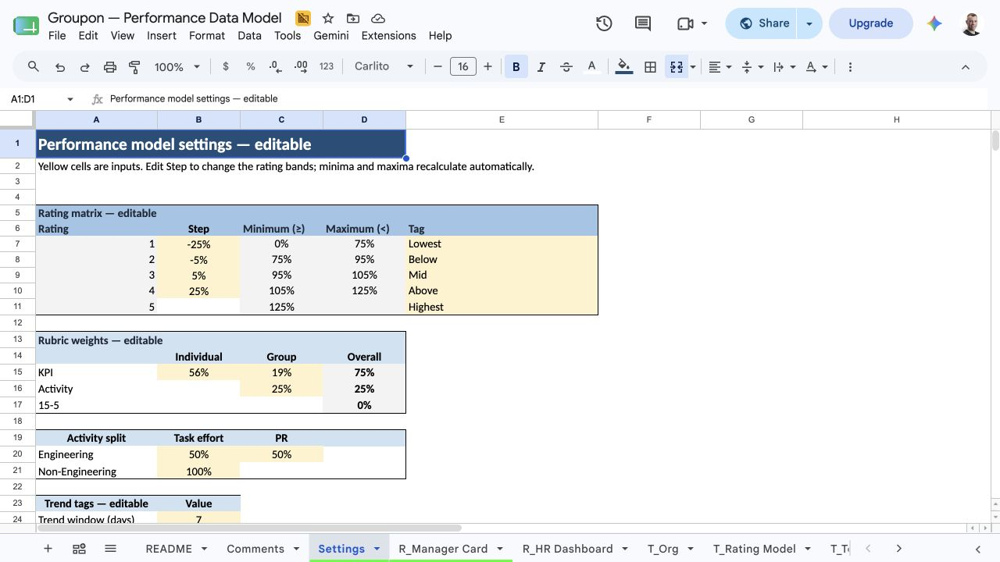
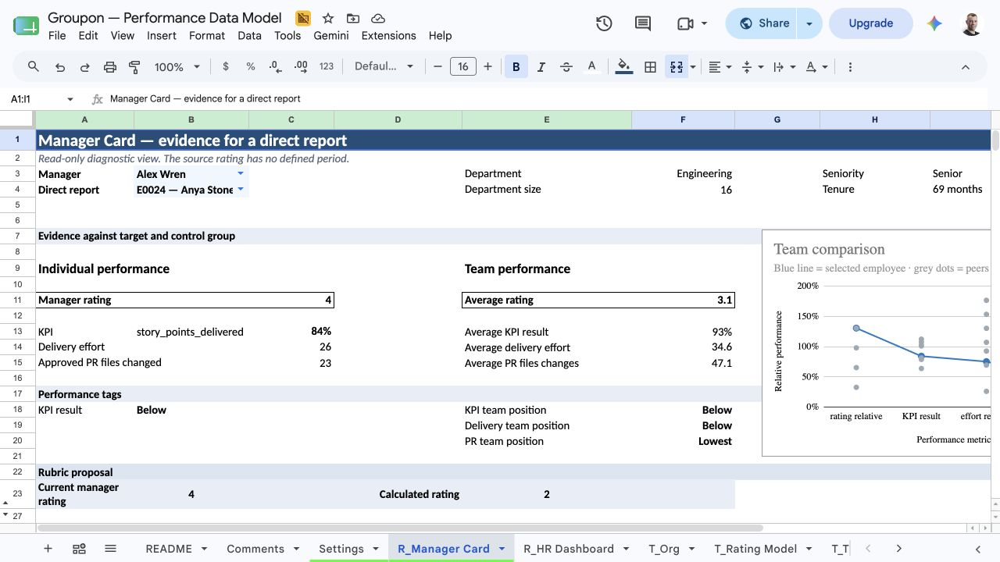
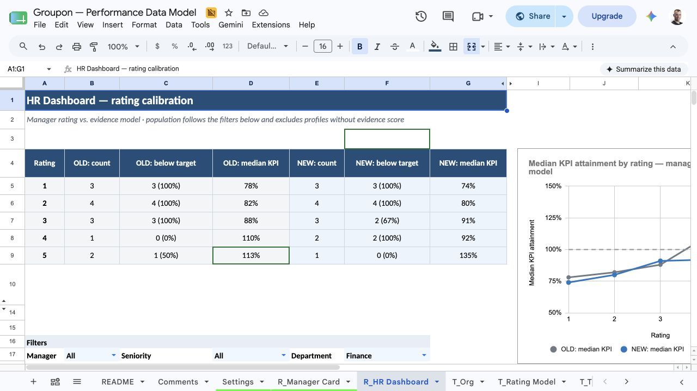
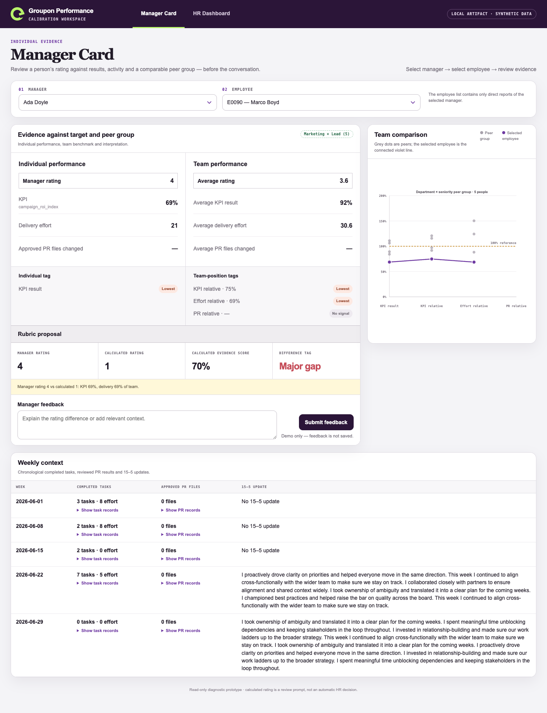

Groupon · AI-First CEO Office (People)
Performance evidence review
A transparent prototype for making performance conversations more evidence-grounded.
1_...md to 5_...md: analysis, model, MVP, operation and AI use
Groupon_Performance_MVP.html: runnable Manager Card and HR Dashboard
Google Sheet: transparent modeling prototype
What was found, what was built and how it is evaluated.
Short source documents for analysis, evaluation, MVP, operation and AI.
A local Manager Card and HR Dashboard, with the Sheet retained as the transparent model prototype.
What we found in the data
The inputs contain both useful evidence and material noise
Safe population first
This bar separates profiles eligible for an evidence score from profiles held out because evidence is incomplete.
absent from identity map
missingblocked by shared handles
ambiguoushandles are never inferred from names
employee IDWhat cannot be scored as delivered performance
| Signal | Finding | Decision |
|---|---|---|
| Tasks | 1,489 / 3,791 are delivery work | exclude admin, reporting and bets |
| Bets | 327 / 327 marked “On track” | no variance → exclude |
| 5/15 | 333 / 444 texts are unique | context only |
| PR | 270 / 948 have no approval | count reviewed files only |
Current calibration
Manager rating is only weakly related to KPI results
This chart plots median KPI result for each existing manager-rating level. Rating 4 is below rating 3, so the rating scale is not consistently ordered by KPI result.
There is no observable consistent rating logic.
has lower median KPI than rating 3
94% vs 96%KPI at or below 75%, rating 4–5
high ratingKPI at or above 105%, rating 1–2
low ratingSignals selected
Results are primary; activity is verified, role-aware context
Actual result against an explicit target. This is the strongest observable outcome signal.
Delivery effort for all roles; reviewed PR files for Engineering. No unapproved PRs, admin tasks or Bet updates.
Department × seniority peers provide a benchmark when an absolute target is absent. Fewer than 3 complete profiles = weak benchmark.
Rubric
One weighted score, five editable bands
Result against target plus position in the peer group
75% totalDelivery effort; Engineering splits delivery and reviewed PR files 50/50
25% totalWeights, step and bands are visible and editable in the Sheet
no hidden rules
The Settings tab is the single visible place for weights, step and rating bands.
Who decides
The system proposes a rating; the manager and HR make the judgment
Manager rating and calculated rating match. No calibration action.
One-point difference. Manager records relevant context.
Two or more points. HR calibration discussion.
Manager Card
One view combines evidence, peer context and the required action

The Manager Card brings selection, individual evidence, peer context, rating proposal and manager feedback into one workflow.
The employee list contains only direct reports of the selected manager.
KPI result, delivery effort and reviewed PR activity are shown against department × seniority peers.
Manager rating, calculated rating, evidence score and status stay side by side.
Feedback is required when a gap remains before the final decision.
HR Dashboard
The company view shows where manager ratings need a challenge

The HR Dashboard compares the same filtered population across the manager rating and calculated rating.
Manager, seniority and department filters drive table, chart and employee detail together.
Counts, median KPI result and below-target share for manager and calculated ratings.
HR can investigate the exact evidence and manager explanation.
dominance contradictions; high rating + KPI result below 75% falls 8 → 0; 84% remain within one point in odd/even-week split.
Role of AI
AI accelerated the work; it does not rate people
Dependency map, joins, weights and thresholds were designed in the transparent Google Sheet.
Analysis, formulas, edge-case checks, interface copy and HTML implementation.
The final logic is an observable rubric and Settings, not an opaque prompt or runtime AI call.

The runnable artifact mirrors the Manager Card workflow. It contains no runtime AI call.
Production blueprint
Run before rating conversations; automate evidence, not the decision
own evidence; peers anonymous
named reporting line
company calibration
manager justification
calibration discussion
manager and HR decision
complete coverage
major gaps
weak benchmarks